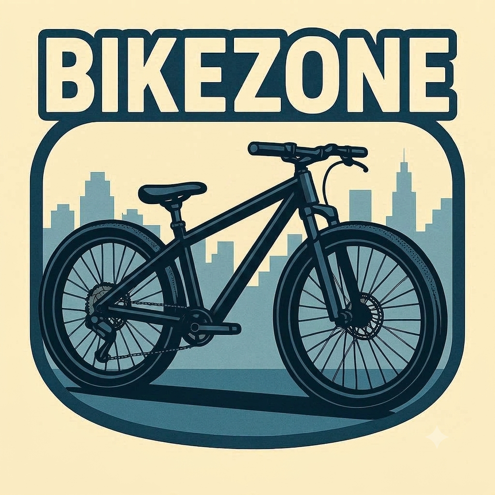
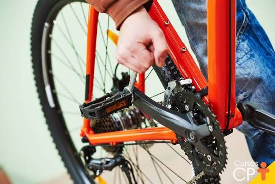
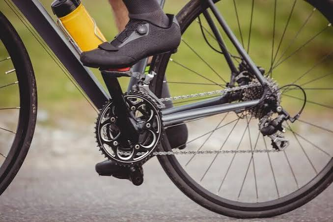

Meu primeiro post
Por: Vitor Fontes Landin
Boas-vindas ao meu novo blog! Aqui vou compartilhar meus conhecimentos sobre o mundo das bikes, suas peças, manutenção e cuidados necessários para pedalar com segurança.
Vou compartilhar conhecimentos sobre peças de bikes e bicicletas.

Por: Vitor Fontes Landin
Boas-vindas ao meu novo blog! Aqui vou compartilhar meus conhecimentos sobre o mundo das bikes, suas peças, manutenção e cuidados necessários para pedalar com segurança.
Conhecendo os componentes da bicicleta
Você sabe para que serve cada peça da sua bicicleta? Cada componente possui uma função importante para que a bike funcione corretamente.
Câmbio: permite trocar as marchas, deixando a pedalada mais fácil ou mais pesada.
Corrente: transmite a força dos pedais para a roda traseira.
Freios: ajudam a diminuir a velocidade e parar a bicicleta com segurança.
Pedais: recebem a força dos pés e ajudam a movimentar a bicicleta.
Todas essas peças trabalham juntas. Por isso, realizar a manutenção da bicicleta é essencial para um pedal seguro.
Cuide bem da sua bike!
Fazer a manutenção da bicicleta é importante para mantê-la segura e funcionando corretamente. Verificar os freios, pneus, corrente e marchas ajuda a evitar problemas durante os passeios.
A manutenção também aumenta a durabilidade das peças, melhora o desempenho da bicicleta e pode evitar gastos maiores com consertos.

Conselhos para o bom funcionamento
Para cuidar do câmbio, limpe a corrente, o cassete e as roldanas com produtos adequados. Depois, aplique lubrificante específico na corrente e retire o excesso com um pano.
Verifique também se as marchas estão trocando corretamente. Se houver barulhos ou dificuldade nas trocas, pode ser necessário ajustar o câmbio.

Pedale com segurança
Verifique regularmente o estado das pastilhas ou sapatas de freio. Confira também se os cabos estão bem ajustados e se os manetes respondem corretamente.
Mantenha os componentes limpos e faça um teste dos freios em baixa velocidade antes de sair para pedalar. Se perceber falhas, procure uma oficina especializada.

Mantenha a transmissão em bom estado
Limpe a corrente para remover poeira e resíduos. Depois de secá-la, aplique lubrificante próprio para bicicletas e retire o excesso com um pano.
Uma corrente limpa e lubrificada ajuda nas trocas de marchas e reduz o desgaste dos componentes da transmissão. Verifique também se ela apresenta sinais de desgaste.
Mais conforto durante a pedalada
Limpe os pedais com um pano ou uma escova para remover a sujeira. Confira se estão bem fixados no pedivela e se giram sem apresentar ruídos ou folgas.
Se perceber dificuldade de movimento, desgaste ou folga excessiva, procure uma oficina para verificar os rolamentos e a fixação dos pedais.